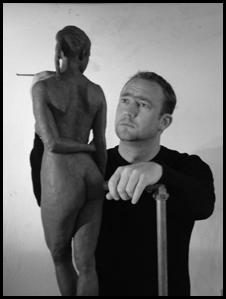

About
The Sculptor
Craig
Halliday
Figurative Sculptor
I have a fascination for people. As a child I found the ‘psychological’ portraits by Rembrandt fascinating. I felt I could gaze into the eyes of the sitter and try to discover the person within. Later in life I discovered the work of Rodin and as a result I was inspired to sculpt.
I would like to try to achieve a similar effect through my sculpture. I would like to try to express the human condition and true emotion and experience through my work. My aim is to try to touch people in the way artists such as Rembrandt and Rodin touched me.